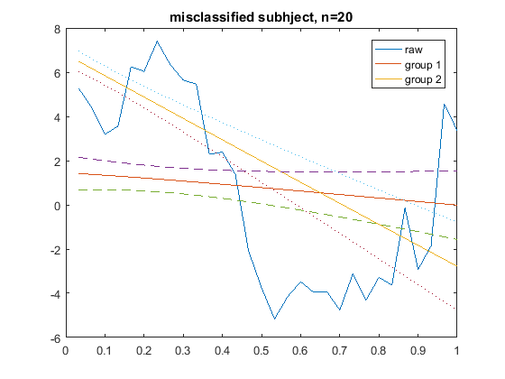
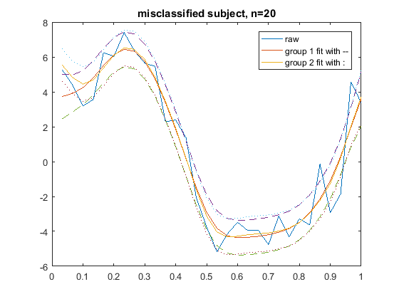

Test for Conditional Probability using VSS, unshuffled
Adding the following folders to the path: -FTSC
Contents
- Clear
- Simulation: Group 1
- Simulation: Group 2
- Model setting
- group 1
- group 2
- Shuffle data
- Fitting SSM model
- logCondProb for subjects from group 1
- logCondProb for subjects from group 2
- posterior probability
- Group 1 state space model
- Group 2 state space model
- group average
- Misclassified subject
- subject-fit of misclassified subject : group 1
- subject-fit of misclassified subject : group 2
- plot the subject-fit of the misclassified subject
Clear
clear; clc; rng(1) % control the randomness nClusters = 2; m = 30; % number of observations t = (1:m)/m; p = 1; % # of fixed effects q = 1; % # of random effects
Simulation: Group 1
n1 = 20; % number of subjects sigma_e = 1; % variance of white noise realFixedEffect1 = 5 * sin(2*pi*t); % p-by-m realRandomEffect1 = randn(n1,4)*[cos(2*pi*t);cos(4*pi*t);... cos(6*pi*t);ones(1,m)]; realY1 = repmat(realFixedEffect1, [n1,1]) + realRandomEffect1; Y1 = realY1+ sqrt(sigma_e)*randn(n1,m);
Simulation: Group 2
n2 = 20; % number of subjects sigma_e = 1; % variance of white noise realFixedEffect2 = 7 * sin(2*pi*t + pi/4); % p-by-m realRandomEffect2 = randn(n2,4)*[cos(2*pi*t);cos(4*pi*t);... cos(6*pi*t);ones(1,m)]; realY2 = repmat(realFixedEffect2, [n2,1]) + realRandomEffect2; Y2 = realY2+ sqrt(sigma_e)*randn(n2,m);
Model setting
fixedArray = ones(1,p); randomArray = ones(1,q); % Start point logpara0 = [0; % log of e -10;-10; % logs of lambdaF, lambdaR 1;1]; % log of randomDiag diffusePrior = 1e7; dataset = [Y1; Y2]; prior = ones(1, nClusters)/nClusters; logparahat = zeros(length(logpara0), nClusters); fval = zeros(1, nClusters);
group 1
[logparahat(:,1), fval(1)] = ...
fmeTraining(@BuiltIn, Y1, fixedArray, randomArray, t, logpara0, diffusePrior);
group 2
[logparahat(:,2), fval(2)] = ...
fmeTraining(@BuiltIn, Y2, fixedArray, randomArray, t, logpara0, diffusePrior);
logCondProb0 = - fval logparahat
logCondProb0 =
1.0e+03 *
-1.1514 -1.1652
logparahat =
0.1004 -0.0011
-11.1655 -13.8890
-8.4670 -9.0895
0.9224 -1.0151
-8.4737 -4.2620
Shuffle data
Y1 = Y1(randperm(size(Y1,1)),:); Y2 = Y2(randperm(size(Y2,1)),:);
Fitting SSM model
group 1
SSMp1(1) = fme2ss(n1+1, fixedArray, randomArray, t, logparahat(:,1), diffusePrior);
SSMm1(1) = fme2ss(n1-1, fixedArray, randomArray, t, logparahat(:,1), diffusePrior);
% group 2
SSMp1(2) = fme2ss(n2+1, fixedArray, randomArray, t, logparahat(:,2), diffusePrior);
SSMm1(2) = fme2ss(n2-1, fixedArray, randomArray, t, logparahat(:,2), diffusePrior);
Algo = @BuiltIn;
Switches = 0;
logCondProb = zeros(n1+n2, nClusters);
logCondProb for subjects from group 1
correct_G1 = 0; for i=1:n1 % compute the logcondprob for cluster 1 Members1 = 1:n1; Members1(Members1 == i) = []; logCondProb(i,1) = logCondProb0(1) - Algo(SSMm1(1), Y1(Members1,:)); % compute the logcondprob for cluster 2 logCondProb(i,2) = Algo(SSMp1(2), [Y2; Y1(i,:)]) - logCondProb0(2); if logCondProb(i,1) > logCondProb(i,2) correct_G1 = correct_G1 + 1; end end
logCondProb for subjects from group 2
correct_G2 = 0; for j=1:n2 % compute the logcondprob for cluster 1 logCondProb(n1+j,1) = Algo(SSMp1(1), [Y1; Y2(j,:)]) - logCondProb0(1); % compute the logcondprob for cluster 2 Members2 = 1:n2; Members2(Members2 == j) = []; logCondProb(n1+j,2) = logCondProb0(2) - Algo(SSMm1(2), Y2(Members2,:)); if logCondProb(n1+j,1) < logCondProb(n1+j,2) correct_G2 = correct_G2 + 1; end end
posterior probability
Priors = repmat(prior, n1+n2, 1); CondProbs = exp(logCondProb); Posteriors = BayesUpdate(Priors, CondProbs); % get variable names VarNames = repmat({}, 1, nClusters); for k=1:nClusters VarNames{k} = strcat('Group ', num2str(k)); end % get row names RowNames = repmat({}, n1+n2, 1); for i=1:n1+n2 RowNames{i} = strcat('Subject ', num2str(i)); end PosteriorsTable = ... array2table(round(Posteriors,4), 'VariableNames', VarNames, 'RowNames', RowNames) SensTable = array2table([correct_G1, n1 - correct_G1; n2 - correct_G2, correct_G2],... 'VariableNames', {'Cluster1', 'Cluster2'}, 'RowNames', {'Group1', 'Group2'})
PosteriorsTable =
Group1 Group2
______ ______
Subject1 1 0
Subject2 1 0
Subject3 0.9793 0.0207
Subject4 0.9995 0.0005
Subject5 1 0
Subject6 1 0
Subject7 1 0
Subject8 0.9354 0.0646
Subject9 1 0
Subject10 1 0
Subject11 0.9998 0.0002
Subject12 0.998 0.002
Subject13 1 0
Subject14 1 0
Subject15 1 0
Subject16 0.9995 0.0005
Subject17 1 0
Subject18 0.99 0.01
Subject19 0.997 0.003
Subject20 0.6416 0.3584
Subject21 0.1641 0.8359
Subject22 0.0004 0.9996
Subject23 0.0044 0.9956
Subject24 0.3366 0.6634
Subject25 0.0183 0.9817
Subject26 0.0042 0.9958
Subject27 0.0107 0.9893
Subject28 0.1324 0.8676
Subject29 0.0008 0.9992
Subject30 0.0052 0.9948
Subject31 0.1208 0.8792
Subject32 0.0002 0.9998
Subject33 0.0054 0.9946
Subject34 0.0121 0.9879
Subject35 0.0354 0.9646
Subject36 0.2505 0.7495
Subject37 0.27 0.73
Subject38 0.1507 0.8493
Subject39 0.0043 0.9957
Subject40 0.0148 0.9852
SensTable =
Cluster1 Cluster2
________ ________
Group1 20 0
Group2 0 20
Group 1 state space model
SSM_G1 = fme2ss(n1, fixedArray, randomArray, t, logparahat(:,1), diffusePrior); [logL_G1, Output_G1] = BuiltInSmoother(SSM_G1, Y1);
Group 2 state space model
SSM_G2 = fme2ss(n2, fixedArray, randomArray, t, logparahat(:,2), diffusePrior); [logL_G2, Output_G2] = BuiltInSmoother(SSM_G2, Y2);
group average
k = 1; % the real fixed effect state parameter ConfidenceLevel = 0.95; % confidence level % group 1 [Smoothed_G1, SmoothedVar_G1] =... StatesMeanVar(Output_G1, 'built-in', 'smooth'); [Smoothed95Upper_G1, Smoothed95Lower_G1] = ... NormalCI(Smoothed_G1, SmoothedVar_G1, ConfidenceLevel); % group 2 [Smoothed_G2, SmoothedVar_G2] =... StatesMeanVar(Output_G2, 'built-in', 'smooth'); [Smoothed95Upper_G2, Smoothed95Lower_G2] = ... NormalCI(Smoothed_G2, SmoothedVar_G2, ConfidenceLevel);
Misclassified subject
r = 20; figure; plot(t, Y1(r,:),... t, Smoothed_G1(k,:),... t, Smoothed_G2(k,:),... t, Smoothed95Upper_G1(k,:), '--',... t, Smoothed95Lower_G1(k,:), '--',... t, Smoothed95Upper_G2(k,:), ':',... t, Smoothed95Lower_G2(k,:), ':'); legend('raw', 'group 1', 'group 2'); title(strcat('misclassified subhject, n=', num2str(r)));
subject-fit of misclassified subject : group 1
[yFittedMean_G1, yFittedVar_G1] = SpaceMeanVar(Output_G1, SSM_G1, 'built-in', 'smooth'); [yFitted95Upper_G1, yFitted95Lower_G1] = ... NormalCI(yFittedMean_G1, yFittedVar_G1, ConfidenceLevel);
subject-fit of misclassified subject : group 2
[logL_G2p1, Output_G2p1] = BuiltInSmoother(SSMp1(2), [Y2; Y1(r,:)]); [yFittedMean_G2, yFittedVar_G2] = SpaceMeanVar(Output_G2p1, SSMp1(2), 'built-in', 'smooth'); [yFitted95Upper_G2, yFitted95Lower_G2] = ... NormalCI(yFittedMean_G2, yFittedVar_G2, ConfidenceLevel);
plot the subject-fit of the misclassified subject
figure; plot(t, Y1(r,:),... t, yFittedMean_G1(r,:),... t, yFittedMean_G2(end,:),... t, yFitted95Upper_G1(r,:), '--',... t, yFitted95Lower_G1(r,:), '--',... t, yFitted95Upper_G2(end,:), ':',... t, yFitted95Lower_G2(end,:), ':'); legend('raw', 'group 1 fit with --', 'group 2 fit with :'); title(strcat('misclassified subject, n=', num2str(r)));